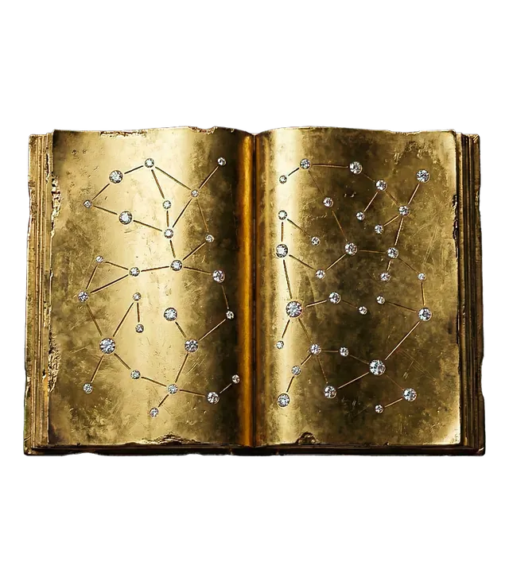

Bibliothèque
L'astrologie karmique : comprendre ce que l'on vient réparer
Par MadeleineMis à jour le 31 octobre 20263 min de lecture

En bref
L'astrologie karmique lit le thème comme un chemin d'évolution : ce que l'on apporte, ce que l'on vient apprendre, ce que l'on peut transformer. Elle s'appuie sur les nœuds lunaires, Saturne, Chiron, la maison 12 et les planètes rétrogrades.
L'astrologie karmique lit le thème astral comme le récit d'un chemin d'évolution : ce que l'on apporte avec soi, ce que l'on vient apprendre et ce que l'on peut transformer. Elle s'appuie surtout sur les nœuds lunaires (Nœud Nord et Nœud Sud), Saturne, Chiron, la maison 12 et les planètes rétrogrades à la naissance. L'approche transgénérationnelle y ajoute les schémas familiaux qui se répètent d'une génération à l'autre. C'est la spécialité de la Maison.
Qu'est-ce que l'astrologie karmique ?
Le mot « karma » vient du sanskrit et signifie « action ». Dans les traditions de l'Inde, il désigne l'idée que nos actes ont des conséquences qui nous suivent. L'astrologie karmique occidentale reprend cette image de façon symbolique : le thème natal y devient une carte de ce que l'on porte, des facilités héritées et des leçons à apprendre.
On peut l'aborder avec ou sans croyance en la réincarnation. Beaucoup y voient simplement un outil de connaissance de soi : comprendre ses automatismes, ses peurs, ses répétitions, pour mieux choisir sa direction.
Les points clés d'une lecture karmique
Le Nœud Sud et le Nœud Nord
Les nœuds lunaires sont les deux points où l'orbite de la Lune croise celle du Soleil. Toujours opposés, ils forment l'axe le plus important de l'astrologie karmique. Le Nœud Sud décrit ce qui est acquis, familier, facile, mais aussi ce qui peut enfermer. Le Nœud Nord décrit la direction à prendre, ce que l'on vient développer, souvent inconfortable au début mais profondément nourrissant. Nous y consacrons un article : le Nœud Nord et la mission de vie.
Saturne, le maître des leçons
Saturne indique où l'on rencontre des limites, des responsabilités et des épreuves qui forgent. C'est aussi là que l'on devient solide avec le temps. Son grand rendez-vous, vers 29 ans, est le retour de Saturne.
Chiron, la blessure qui guérit
Chiron, petit corps céleste entre Saturne et Uranus, symbolise une blessure profonde qui devient une capacité de guérir les autres. Voir notre article sur Chiron, la blessure sacrée.
La maison 12
La maison 12 est lue comme le lieu des mémoires héritées et de l'inconscient. Les planètes qui s'y trouvent indiquent des thèmes cachés à éclairer. Lire notre article sur la maison 12.
Les planètes rétrogrades à la naissance
Une planète rétrograde dans le thème natal est souvent interprétée comme une fonction à revisiter, à intérioriser, à vivre autrement que la majorité.
L'approche transgénérationnelle
La Maison associe la lecture karmique à une approche transgénérationnelle : on s'intéresse aux schémas qui se répètent dans une lignée (rapport à l'argent, au couple, à la réussite, aux secrets de famille). En comparant le thème d'une personne avec les grandes dates et histoires de sa famille, on cherche ce qui appartient encore au passé dans le présent. L'objectif n'est pas de juger, mais de libérer.
Ce que l'astrologie karmique n'est pas
- Ce n'est pas une punition : aucune position n'est une « dette » à payer dans la souffrance.
- Ce n'est pas une prédiction : elle décrit des tendances et des potentiels.
- Ce n'est pas un substitut à un accompagnement thérapeutique quand il est nécessaire.
Commencer sa propre lecture
Pour explorer votre thème sous cet angle, commencez par calculer votre thème astral et repérez la position de vos nœuds lunaires, de Saturne et de Chiron. Pour une étude complète, croisée avec votre histoire familiale, c'est le travail du Cabinet privé de la Maison, présenté sur la page étude karmique.
Questions fréquentes
Qu'est-ce que l'astrologie karmique ?
Une lecture du thème astral centrée sur l'évolution personnelle : ce que l'on apporte, ce que l'on vient apprendre, ce que l'on peut transformer. Elle s'appuie sur les nœuds lunaires, Saturne, Chiron et la maison 12.
Comment connaître son karma en astrologie ?
On regarde d'abord l'axe des nœuds lunaires : le Nœud Sud pour les acquis, le Nœud Nord pour la direction à prendre. Saturne et Chiron complètent la lecture.
Faut-il croire à la réincarnation pour s'y intéresser ?
Non. Beaucoup l'utilisent comme un outil symbolique de connaissance de soi, pour comprendre leurs schémas répétitifs et leurs talents.
Quelle est la différence avec l'astrologie classique ?
L'astrologie classique décrit le caractère et les tendances. L'astrologie karmique met l'accent sur le sens du parcours, les répétitions et l'évolution personnelle.